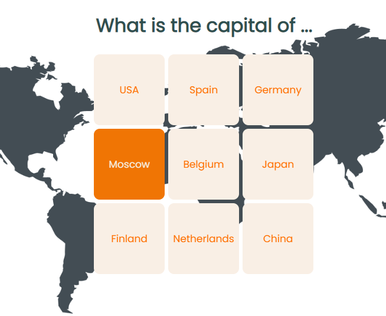
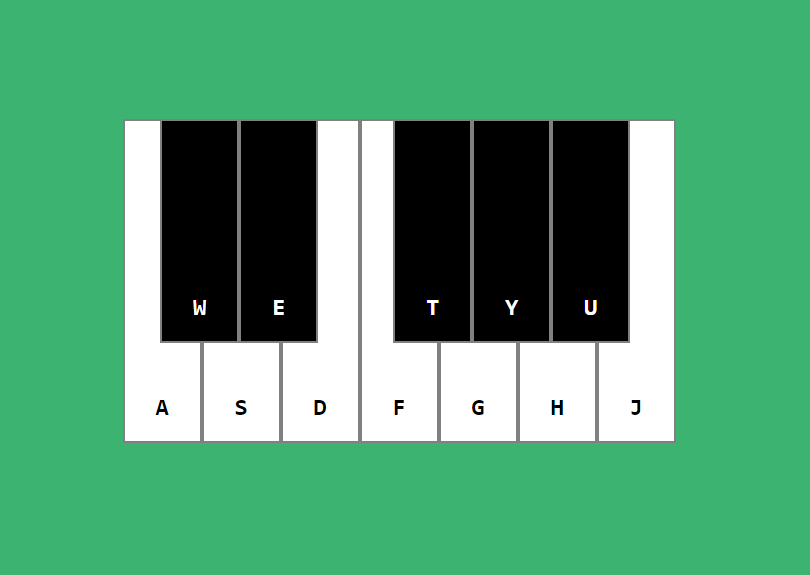

Привет!
Меня зовут Олеся. В прошлом году я успешно закончила НГТУ и сейчас в поиске работы в сфере Web-разработки.
В дипломной работе делала fronted часть для web-сервиса по управлению мобильными роботами с использованием React.
Завершила курс для fronted разработчиков на платформе hyperskill.
В данный момент продолжаю изучать React.
Skills: HTML, CSS, JS, React.
Projects
Flashcard
Virtual Piano
Контакты
Email: lysokobylko.2017@gmail.com
Telegram: alice_744